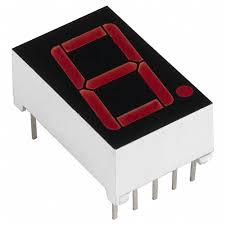
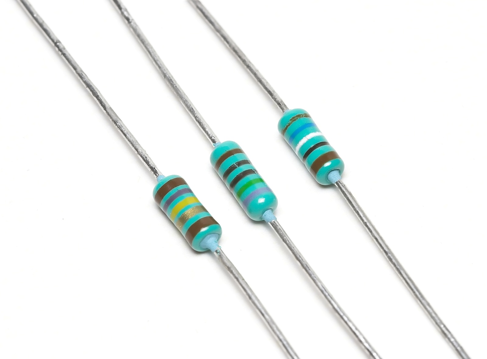
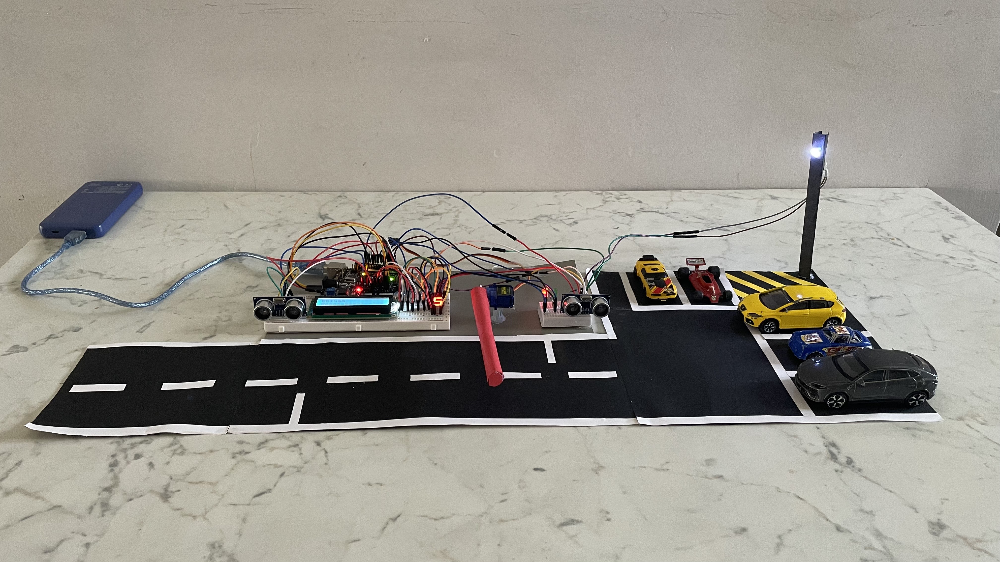
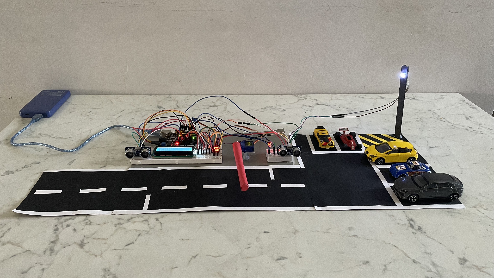

Componenti Utilizzati
- Arduino Uno
- Sensori a ultrasuoni HC-SR04
- Servo motore SG90

- Display LCD 16x2
- Display a 7 segmenti
 - Breadboard

- LED (verde, rosso o bianco)

- Resistenze
 - Jumper wires
- I2C Modulo
Questo progetto è un sistema automatizzato per la gestione di un parcheggio, basato su Arduino. Utilizza sensori a ultrasuoni per rilevare l’ingresso e l’uscita delle auto, aggiornando automaticamente il numero di posti disponibili.
Il sistema comunica con l’utente tramite:
Il sistema gestisce tutto in modo automatico e intelligente, riconoscendo quando un’auto entra o esce e aggiornando il conteggio dei posti in tempo reale.
È un progetto pratico che unisce componenti semplici e dimostra come Arduino possa essere usato per realizzare applicazioni concrete e utili nella vita quotidiana.
Il progetto è nato con tre componenti fondamentali: un sensore a ultrasuoni per rilevare le auto, un servo motore per il cancello, e un display LCD per mostrare lo stato (“Aperto” o “Chiuso”).
Successivamente abbiamo integrato due LED: uno verde per indicare quando il cancello è aperto e uno rosso per quando è chiuso, simulando così un semaforo.
Abbiamo poi aggiunto la gestione degli spazi del parcheggio (inizialmente 5 posti). Il numero dei posti diminuiva a ogni ingresso e veniva segnalato quando il parcheggio era pieno.
Per migliorare la funzionalità, abbiamo aggiunto un secondo sensore a ultrasuoni all’uscita per rilevare quando una macchina esce, così da incrementare nuovamente i posti disponibili. Per gestire il numero crescente di componenti, abbiamo utilizzato un adattatore I2C per il display LCD, liberando così dei pin digitali.
In seguito abbiamo introdotto un display a 7 segmenti per mostrare il numero dei posti disponibili in modo chiaro, mentre l’LCD mostra una freccia che punta verso il display.
Infine, per aggiungere realismo e un tocco estetico, abbiamo incluso una luce LED bianca che simula un palo della luce sopra il cancello.
 

Il codice completo è disponibile su GitHub.